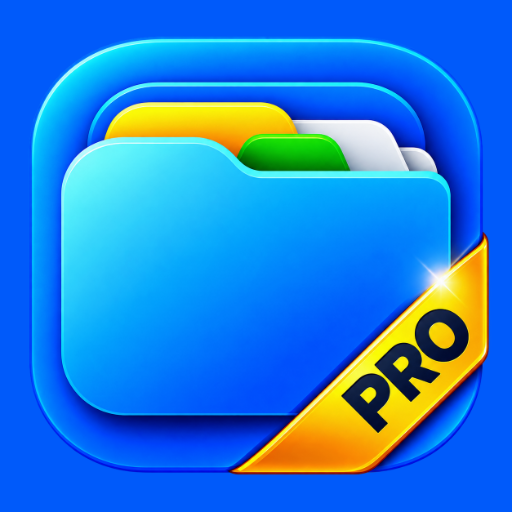
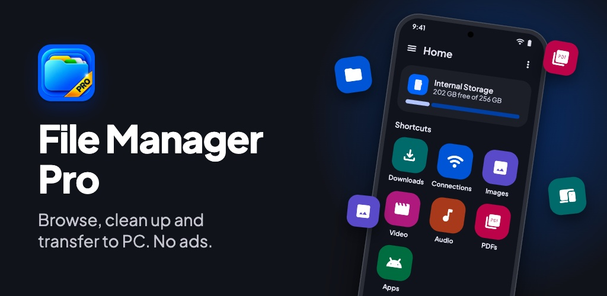
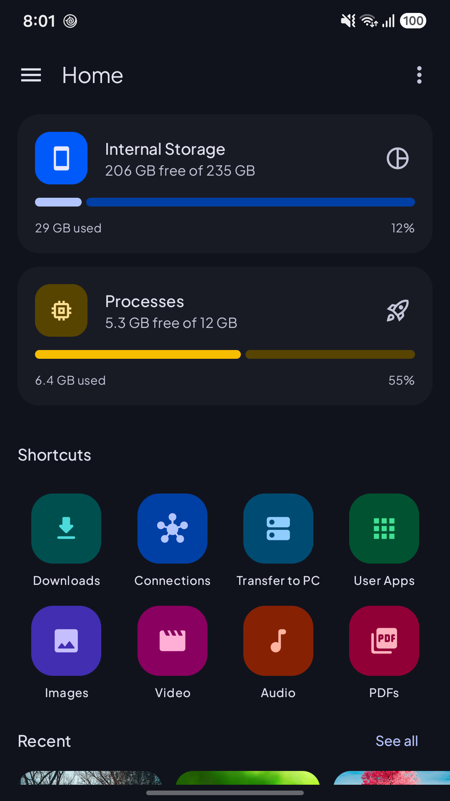
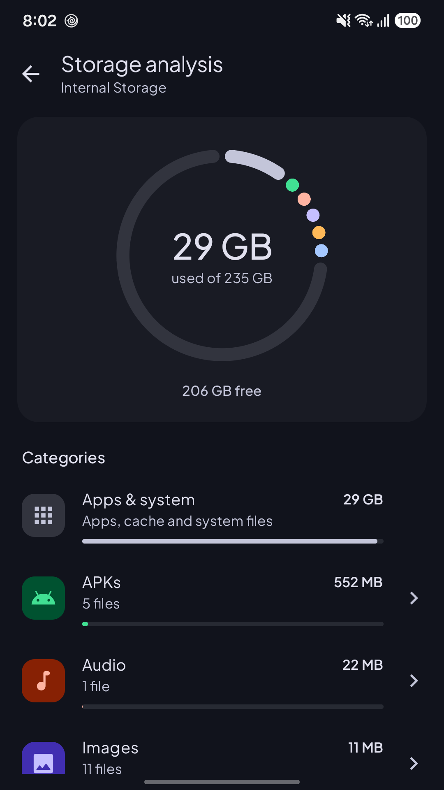
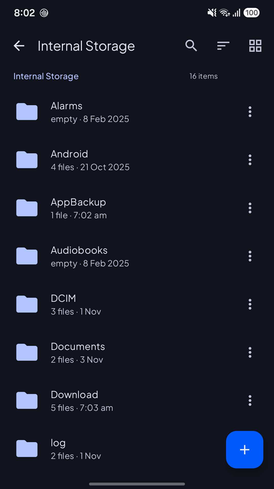
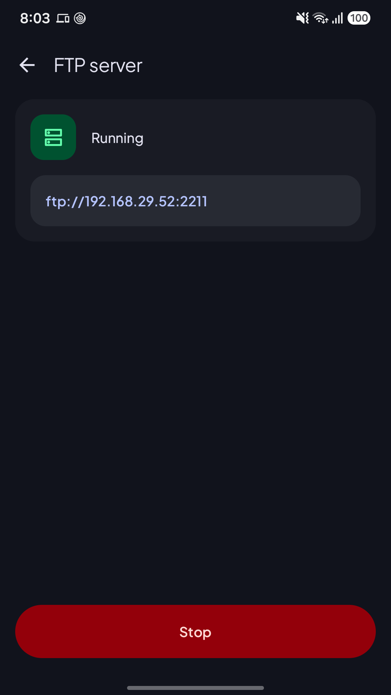
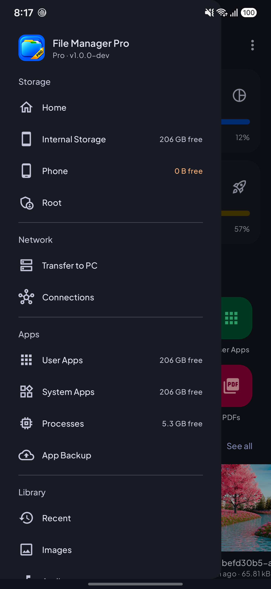
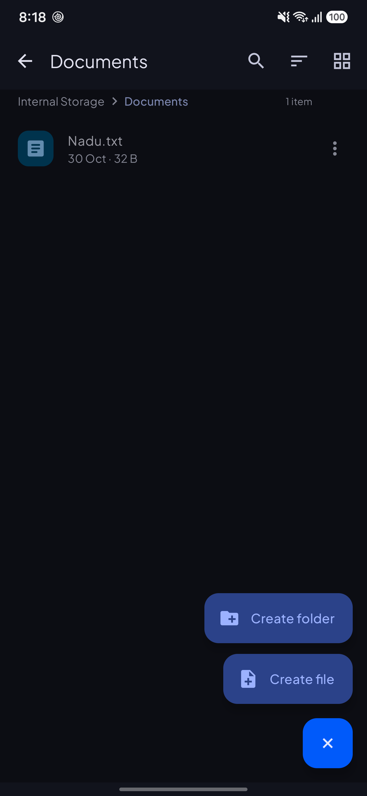

File Manager Pro: Explorer
Get it on Google PlayAd-free file manager: storage analysis, transfer to PC, USB drives and themes

Screenshots






What's New
A completely redesigned File Manager Pro:
- New modern design with light, dark, AMOLED and wallpaper themes
- Storage analysis: see what's taking up space and clear your largest files
- Transfer to PC keeps running in the background
- New shortcuts for Downloads and PDFs
- Apps now show their real icons
- Many fixes and performance improvements
About this app
File Manager Pro is a clean, fast and ad-free way to browse, organise and free up space on your phone.
★ Everything in one place
• Browse internal storage, SD cards and USB drives (USB OTG)
• Quick shortcuts to Downloads, Images, Videos, Audio and PDFs
• Libraries for Documents, Archives and APK files
• Recent files and bookmarks for the folders you use most
★ See what's using your storage
• Storage analysis shows space used by images, videos, audio, documents, apps and more
• Find your largest files and delete what you don't need in a couple of taps
★ Transfer files to your PC, without cables
• Start the built-in FTP server and open the address on your computer
• Copy files both ways over Wi-Fi; stop the server from the notification at any time
★ Powerful file tools
• Copy, move, rename, delete and share files and folders
• Compress files to ZIP and extract archives
• Search inside any folder
• Grid or list view, sorting by name, date or size
• Built-in text editor for notes and plain-text files
• Connect to FTP and FTPS servers
• Root access for rooted devices
• Back up installed apps as APK files
★ Make it yours
• Light, dark and AMOLED black themes
• Wallpaper colours on Android 12 and later
• Choice of fonts
★ Pro
• No ads, ever
• Every feature included with a one-time purchase
File Manager Pro needs the "All files access" permission to show and manage all the files on your device. Your files stay on your device; the app doesn't upload them anywhere.